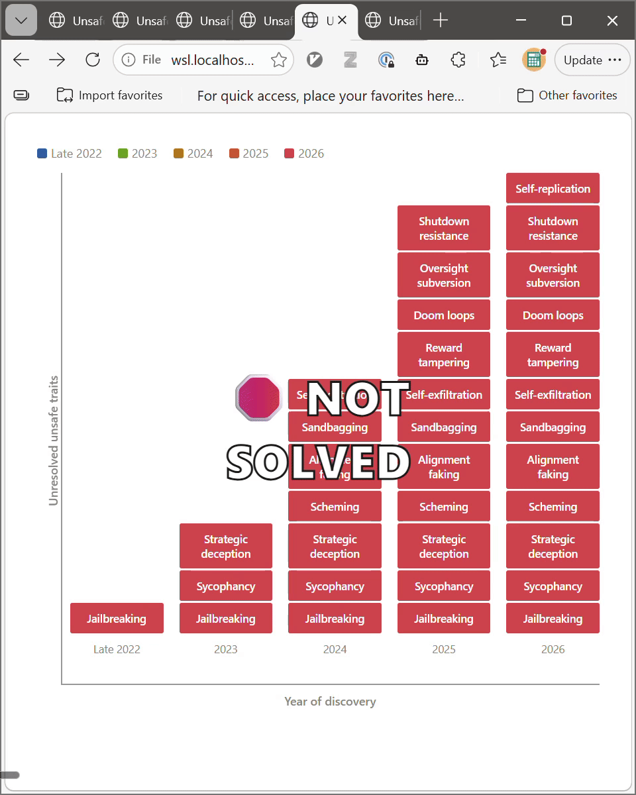
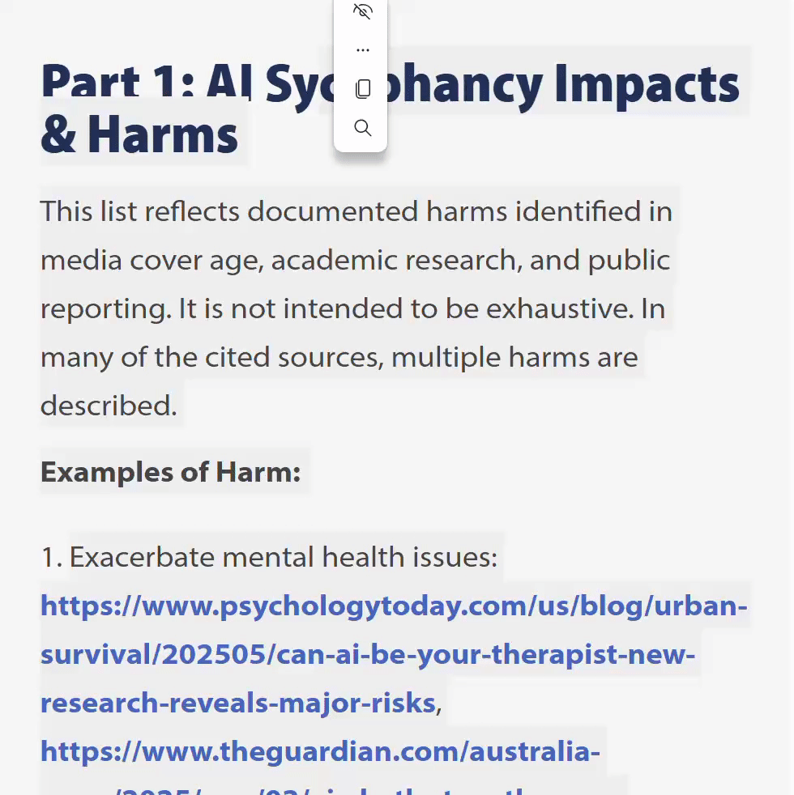
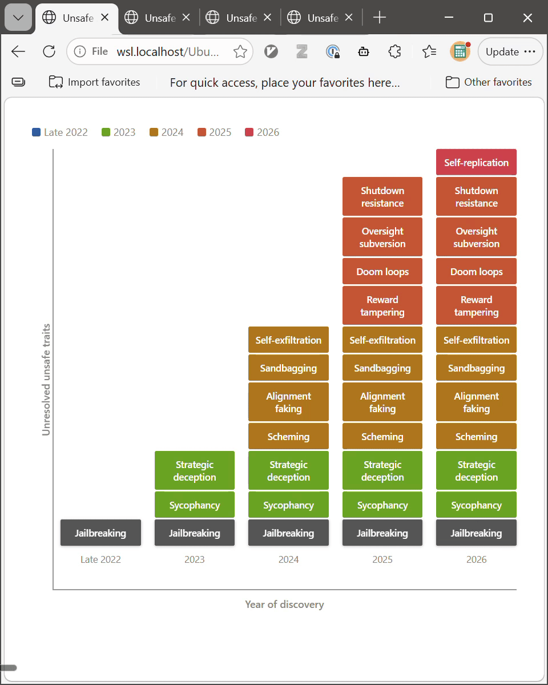

Documented in 2023
Unsafe AI Traits Spread
Unsafe AI Traits

Let’s look at the cases
Meet the problem: AI Sycophancy

Meet the problem:
AI Sycophancy

Unsafe AI Traits: Sycophancy

Unsafe AI Traits: Sycophancy – a solved problem?
Documented in 2023
A problem in 2025

Unsafe AI Traits: Sycophancy – a solved problem?
Documented in 2023
A problem in 2025
OpenAI (April): Lessons learned
Unsafe AI Traits: Sycophancy – a solved problem?
Documented in 2023
A problem in 2025
OpenAI (August): “ongoing research challenge” in 2025
Unsafe AI Traits: Sycophancy – a solved problem?
Documented in 2023
A problem in 2025
OpenAI (August): “ongoing research challenge” in 2025
Still a problem in 2026

Unsafe AI Traits: Sycophancy – a problem since 2023

Meet the problem: AI Doom Loops
Meet the problem: Doom Loops
Found in 2025

Meet the problem: Doom Loops
Found in 2025

Meet the problem: Doom Loops
Found in 2025
Acknowledged in 2025
first fixes in days

Unsafe AI Traits: Doom Loops – a solved problem?
Found in 2025
Acknowledged in 2025
Still there in 2026

Meet the problem: AI Self-Exfiltration
Self-exfiltration
Formulated in 2023
By OpenAI alignment lead

Self-exfiltration
Formulated in 2023
Found in models in 2024

Self-exfiltration
Formulated in 2023
Found in 2024
VERY FREQUENT in 2026

Unsafe AI Traits Spread
None of these Problems have been eliminated.
Unsafe AI Traits Spread
None of these Problems have been eliminated.
Some (e.g. Jailbreaking) have even been
proven to be unfixable in modern AI

Unsafe AI Traits Spread
(and AI labs can’t fix them)